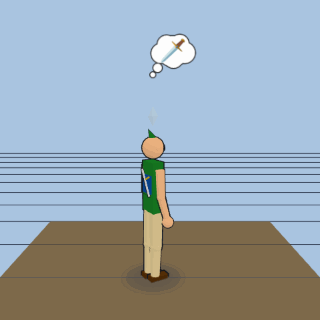
Hero (green tunic, pointed cap)
zelda/hylian-heroThe Legend of Zelda · humanoid · franchise
Avatar rigs, grouped by pack. Idle rig with a 360° camera orbit; personality bubble shown.

zelda/hylian-hero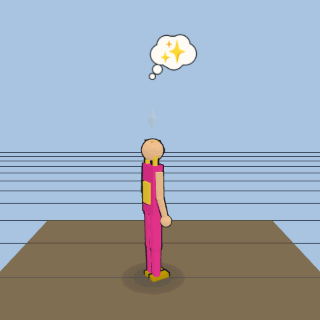
zelda/hyrule-princess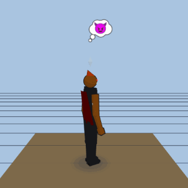
zelda/demon-king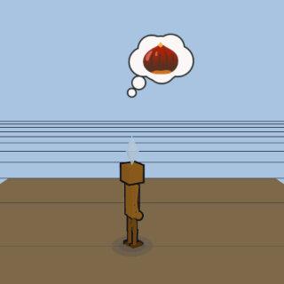
zelda/forest-korok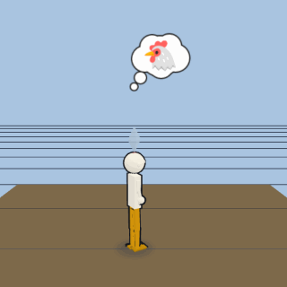
zelda/farm-cucco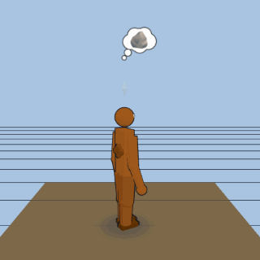
zelda/goron-brawler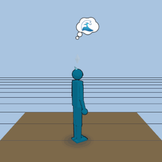
zelda/zora-swimmer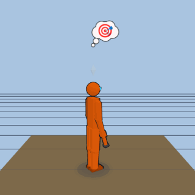
metroid/power-suit-huntress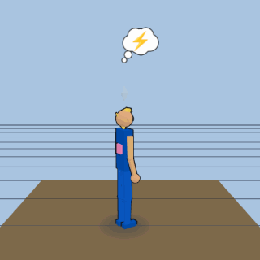
metroid/zero-suit-huntress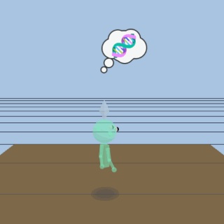
metroid/infant-metroid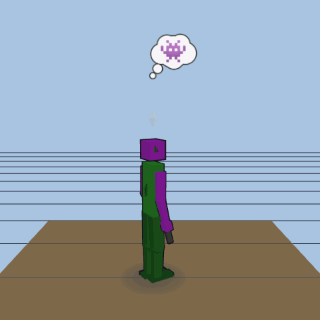
metroid/space-pirate-trooper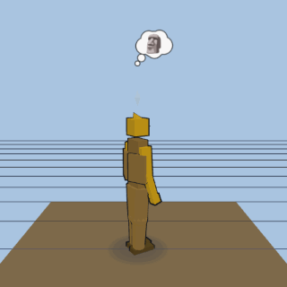
metroid/chozo-guardian-statue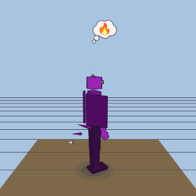
metroid/space-dragon-ridley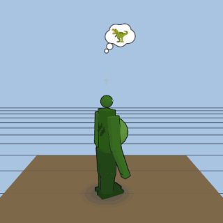
metroid/reptilian-behemoth-kraid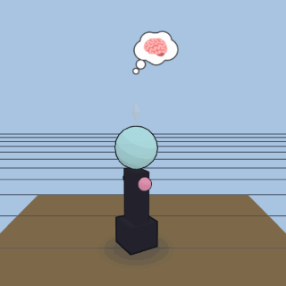
metroid/mother-brain-jar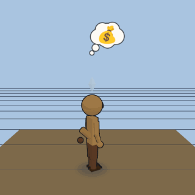
animal-crossing/tom-nook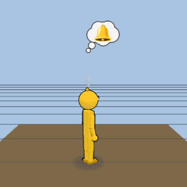
animal-crossing/isabelle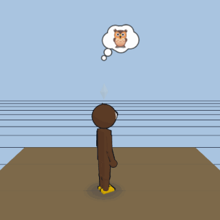
animal-crossing/blathers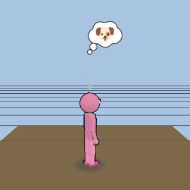
animal-crossing/peppy-villager-dog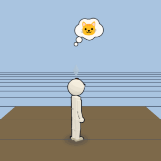
animal-crossing/peppy-villager-cat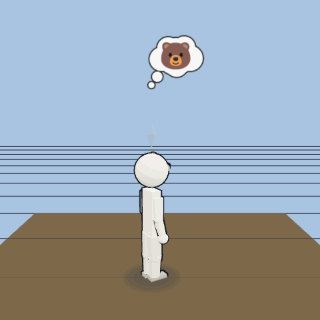
animal-crossing/peppy-villager-bear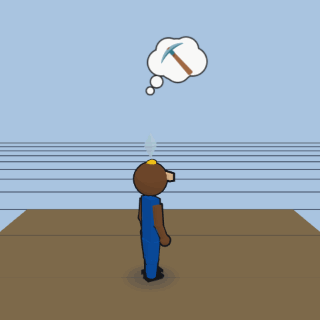
animal-crossing/resetti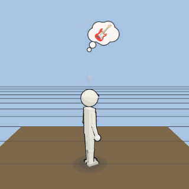
animal-crossing/kk-slider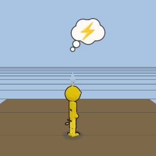
pokemon/pkmn-electric-mouse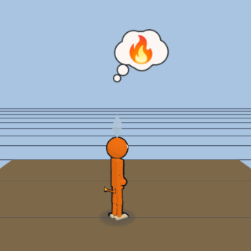
pokemon/pkmn-fire-lizard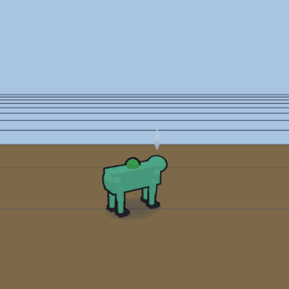
pokemon/pkmn-seed-dino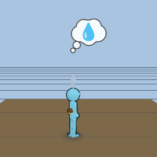
pokemon/pkmn-shell-turtle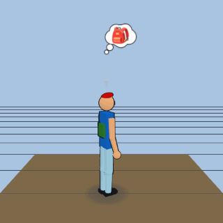
pokemon/pkmn-trainer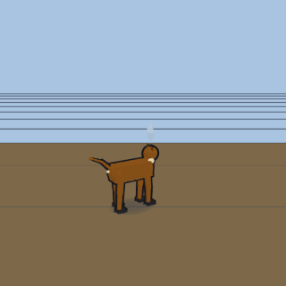
pokemon/pkmn-evolution-fox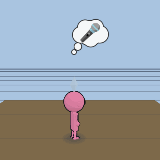
pokemon/pkmn-balloon-imp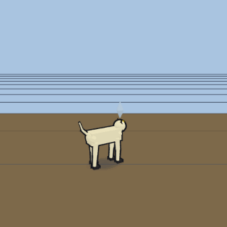
pokemon/pkmn-coin-cat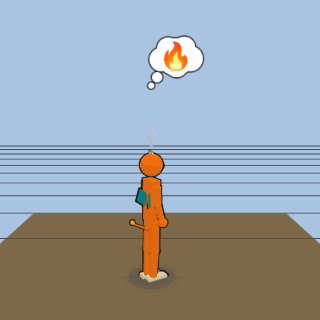
pokemon/fire-dragon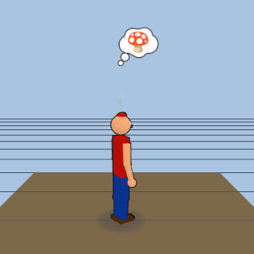
mario/plumber-red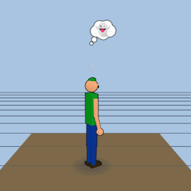
mario/plumber-green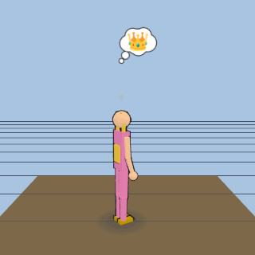
mario/mushroom-princess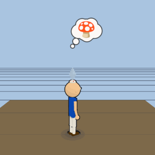
mario/mushroom-toad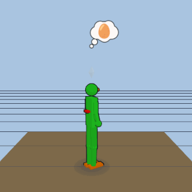
mario/dino-companion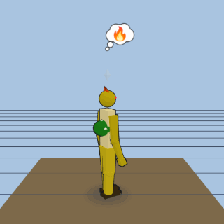
mario/koopa-king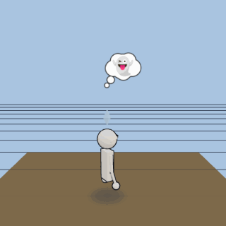
mario/shy-ghost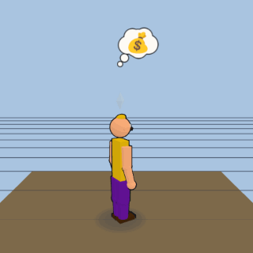
mario/rival-plumber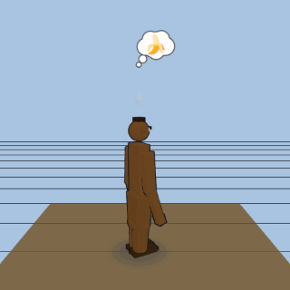
mario/barrel-ape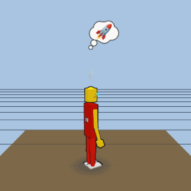
lego/spaceman-red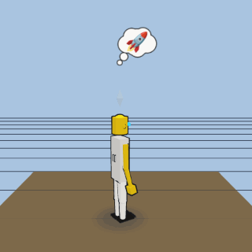
lego/spaceman-white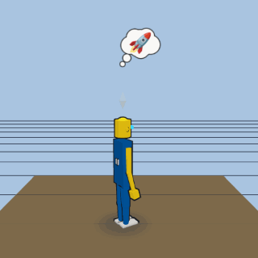
lego/spaceman-blue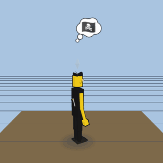
lego/pirate-captain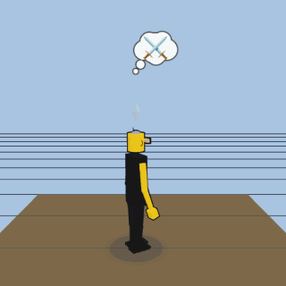
lego/knight-silver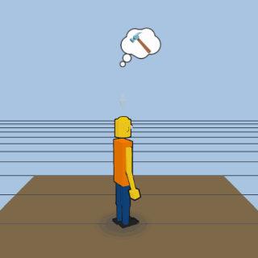
lego/construction-worker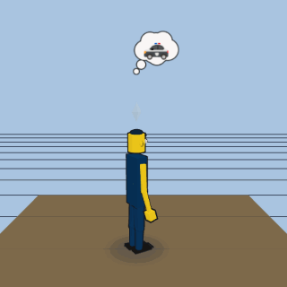
lego/police-officer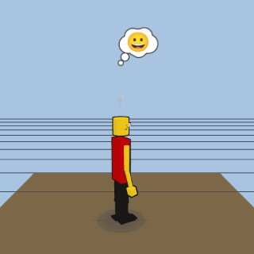
lego/smiley-classic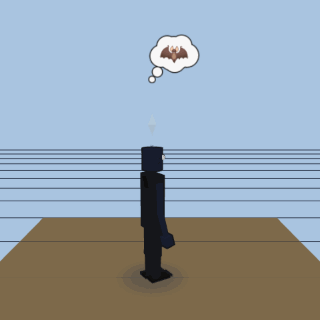
lego/batmanminecraft/player-blueminecraft/player-orangeminecraft/explosive-crawlerminecraft/shambling-undeadminecraft/bone-archerminecraft/void-stalkerminecraft/robed-traderminecraft/tusked-raidersonic-the-hedgehog/blue-blursonic-the-hedgehog/twin-tailed-foxsonic-the-hedgehog/echidna-guardiansonic-the-hedgehog/rosy-herosonic-the-hedgehog/egg-shaped-geniussonic-the-hedgehog/dark-rivalsonic-the-hedgehog/robotic-doppelgangerleague-of-legends/sharpshooter-blue-braidsleague-of-legends/enforcer-shaved-pink-hairleague-of-legends/frost-archer-white-hairleague-of-legends/scout-yordle-hatleague-of-legends/wind-samurai-topknotleague-of-legends/radiant-mage-blondeleague-of-legends/demacian-knight-broadswordleague-of-legends/arcane-explorer-gauntletgenshin-impact/sky-fairygenshin-impact/sword-explorergenshin-impact/crimson-vintnergenshin-impact/spark-scoutgenshin-impact/wind-bardgenshin-impact/amber-contractorgenshin-impact/thunder-regentgenshin-impact/frost-envoypac-man/dot-chomperpac-man/bow-chomperpac-man/chaser-ghostpac-man/ambush-ghostpac-man/drifter-ghostpac-man/wander-ghoststreet-fighter/shoto-whitestreet-fighter/shoto-redstreet-fighter/kicker-bluestreet-fighter/soldier-flattopstreet-fighter/beast-greenstreet-fighter/wrestler-redstreet-fighter/yogi-stretchstreet-fighter/dictator-redhalo/spartan-supersoldierhalo/ai-companionhalo/elite-commanderhalo/marine-sergeanthalo/grunt-trooperhalo/brute-warriorhalo/odst-trooperoverwatch/chrono-pilotoverwatch/mech-pilotoverwatch/crusader-knightoverwatch/shadow-sniperoverwatch/cyber-ninjaoverwatch/guardian-medicoverwatch/junker-bruteoverwatch/genius-primate